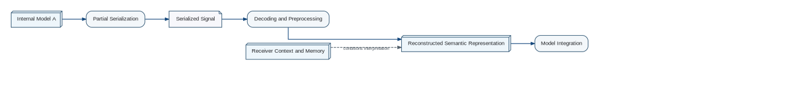

Communication does not transfer a cognitive model. A sender selects a limited fragment of its internal state and transforms that fragment into a sequence suitable for an external channel. This operation is T_PartialSerialization.
Communication and Semantic Reconstruction

The receiver does not reconstruct the sender's model. It uses the received sequence to extend or reorganize its own model until the message appears interpretable within the receiver's current world model.
Sender Model ↓ T_PartialSerialization ↓ Communication Channel ↓ T_Deserialization ↓ T_ModelIntegration ↓ Modified Receiver Model
The adjective partial is essential. A mature cognitive state is too integrated and too large to serialize completely through ordinary communication. The message is meaningful only against a background already present in the receiver.